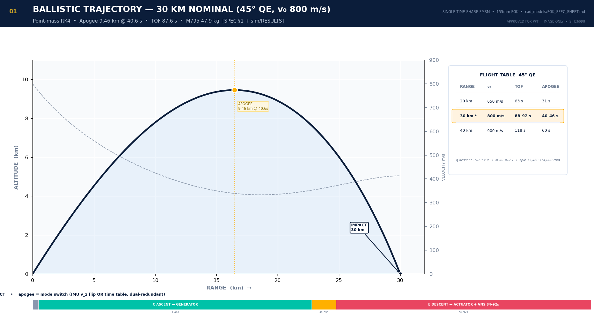
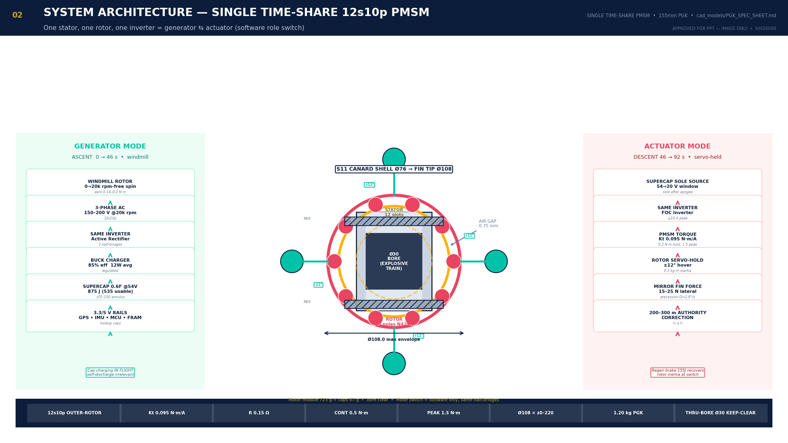
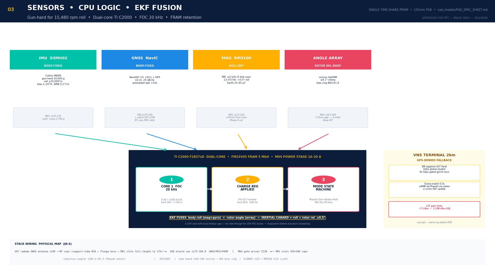
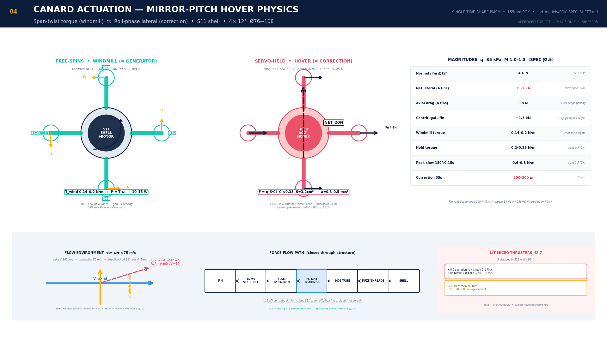
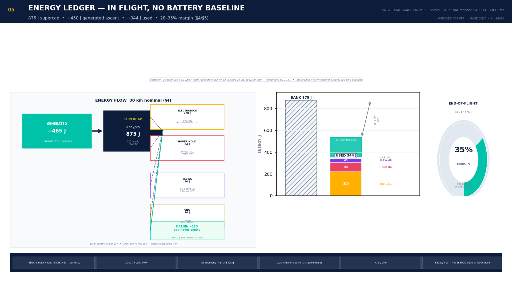
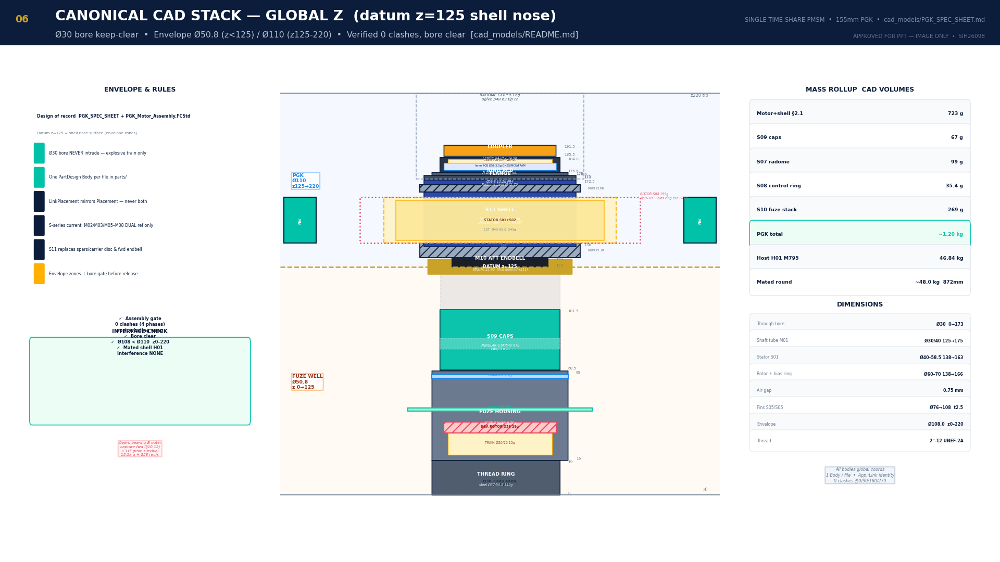
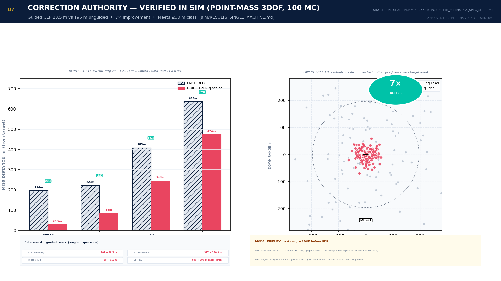
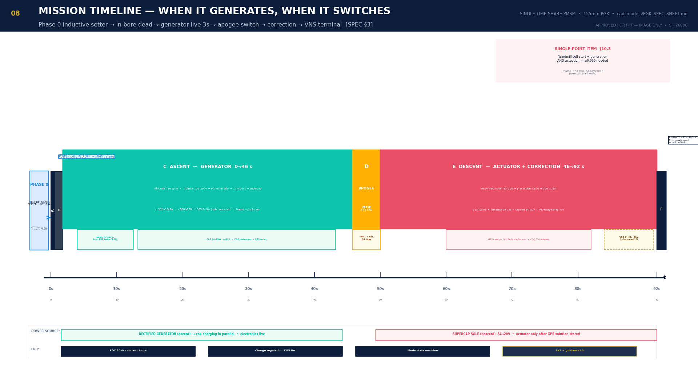

HOW TO USE — IMAGE ONLY
1) Insert → Pictures → pick the .png you need (white background, no transparency issues in PPT).
2) Use .svg if you need infinite zoom (PPT 365). Both are in ppt_resources/.
3) Recommended order: 01 trajectory → 02 architecture → 03 sensors → 04 canards → 05 energy → 06 CAD → 07 CEP → 08 timeline.
Design of record: cad_models/PGK_SPEC_SHEET.md + PGK_Motor_Assembly.FCStd (S-series).
Dual-rotor, battery, cold-gas are reference only — do not reuse. Through-bore Ø30 keep-clear.
01 BALLISTIC TRAJECTORY — 30 KM NOMINAL

Story: 45° QE, v₀ 800, RK4 Cd=0.203, TOF 87.6s, apogee 9.46km@40.6s, q 15–50kPa. PPT tip: Use as opener — shows ballistic vs guidance window.
02 SYSTEM ARCHITECTURE — SINGLE TIME-SHARE 12s10p

Story: One stator / one rotor / one inverter = Generator (ascent, windmill 10–15W) ⇆ Actuator (descent, 15–25N hover). PPT tip: Central diagram explains why bore stays Ø30.
03 SENSORS • CPU LOGIC • EKF FUSION

Story: SiIMU02 + NavIC + RM3100 + angle array → TI C2000 dual-core (FOC 20kHz / nav), FRAM, M04 power. VNS terminal 2km fallback.
04 CANARD ACTUATION — MIRROR-PITCH HOVER PHYSICS

Story: Free-spins torque ADD/lateral 0 (generator) vs Held torques CANCEL/lateral ADD (20N net → precession 2.8°/s → 300m).
05 ENERGY LEDGER — IN FLIGHT, NO BATTERY

Story: Gen ~465J → 875J bank (535 usable) → 344J used (elec 220+hold84+slew40+VNS10) → 35% margin. Battery-free by design.
06 CANONICAL CAD STACK — GLOBAL Z

Story: Datum z=125, Ø30 bore, zones Ø50.8 / Ø110, 25 bodies, ~1.20kg, 0 clashes @4 rotor phases, mated H01 48kg.
07 CORRECTION AUTHORITY — VERIFIED IN SIM

Story: 100 MC, unguided median 196m → guided 28.5m (7×, ≤30m). Deterministic + scatter. 6DOF is next rung.
08 MISSION TIMELINE — WHEN IT GENERATES, SWITCHES

Story: Phase0 setter → in-bore dead → gen 0–46s (GPS 3–10s) → brake 46–50s (155J) → correction 50–92s → VNS 84–92s.